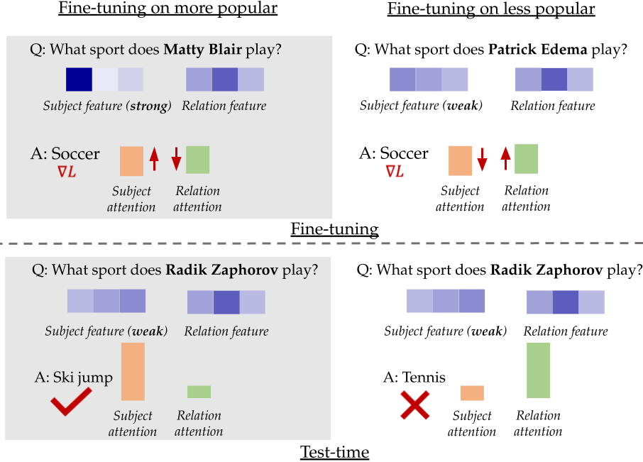
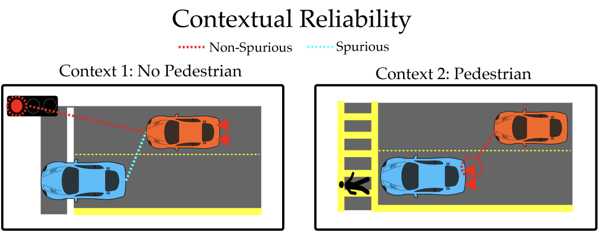
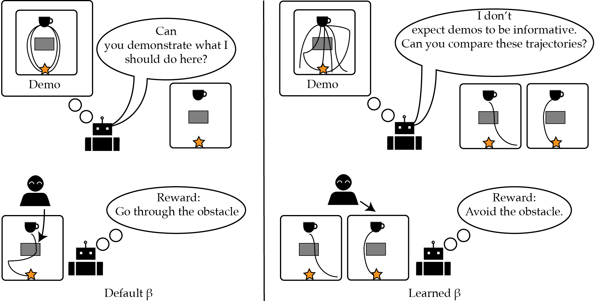

|
Gaurav Ghosal
I'm a second year Ph.D. student at the Carnegie Mellon University Machine Learning Department advised by Professor Aditi Raghunathan. My interests lie broadly in improving the reliability of foundation and large language models. Some areas I am especially focused on include factuality: ensuring that LLMs learn and correctly apply factual knowledge in downstream tasks, model updating: designing LLMs that can be efficiently and reliably updated with new information without losing their general capabilities, and understanding training dynamics: characterizing how LLM failure modes arise during training and developing principled methods to mitigate them. Prior to CMU, I was an undergraduate student and researcher at UC Berkeley where I worked on human-AI interaction with Anca Dragan.
Email /
CV /
Scholar /
Twitter / Github
|
|
Research
Most of my current research focuses on improving reliability of large language models. I pay special attention to problems in improving LLM factuality, enabling efficient updating and unlearning, and studying LLM training dynamics to better understand the origin of their failure modes. In my undergraduate, I published papers on learning from human feedback and robustness to spurious correlations.
|
|

|
Understanding Finetuning for Factual Knowledge Extraction
Gaurav R. Ghosal, Tatsunori Hashimoto, Aditi Raghunathan
International Conference on Machine Learning, 2024
Large language models are exposed to a large amount of factual knowledge during pretraining. How can we ensure that this knowledge is applied in downstream tasks? We make the surprising discovery that finetuning on facts the model knows well ensures leads to better factuality downstream. We substantiate our findings via a theoretical analysis of fine-tuning dynamics.
|
|

|
Contextual Reliability: When Different Features Matter in Different
Contexts
Gaurav R. Ghosal, Amrith Setlur, Daniel S. Brown, Anca Dragan, Aditi Raghunathan
International Conference on Machine Learning, 2023
In many real-world settings, such as autonomous driving, a feature can be important to pay attention to in one context (i.e. a crosswalk), but a distractor in another (a traffic light). How can we make sure that deep neural networks rely on the right features in the right context (without using distractors)? We propose a two stage training method that leverages a limited set of human annotations to enforce robustness. We validate our proposed method on the real-world OpenWaymo challenge.
|
|

|
The Effect of Modeling Human Rationality Level on Learning Rewards from Multiple Feedback Types
Gaurav R. Ghosal, Matthew Zurek, Daniel S. Brown, Anca Dragan
AAAI, 2023
Inferring desired behavior from users is critical for safe and reliable AI, however, users often can give noisy or systematically biased feedback. In this work, we study the effect of modeling the user rationality level when learning a reward function from human feedback. We find that modelling rationality level can be especially desirable in active multi-feedback-type reward learning settings: different types of feedback queries can be optimal depending on the rationality level.
|
|
Academic Service
|
Reviewer, ICML 2025
Reviewer, ICLR 2025
Graduate Application Mentor, CMU GASP (2024-2025)
Undergraduate Mentor, CMU PAIR (2024-2025)"
Reviewer, AAAI 2025
|
|
Teaching
|
Undergraduate Student Instructor, CS189 Spring 2022
|
Credit to Jon Barron for the website template source code.
|
|
{kind=link}